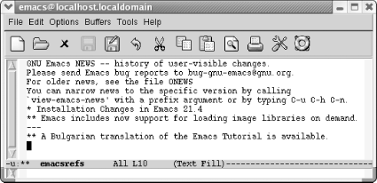

6.3. A More Complicated Macro Example
Sometimes you may want to find all the references to a particular
topic in a file. Table 6-2 lists steps for creating a macro that
takes takes every sentence in the buffer that contains the word
Emacs and copies it to another buffer. If you
try this macro, you'll need to type some text about
Emacs into a buffer. You can also get a test file to work with by
opening the Emacs NEWS file (using C-h n), then writing it to a file (C-x C-w NEWS). This buffer is in view mode by default;
change to text mode by typing M-x text-mode
Enter.
Table 6-2. Steps for macro that creates a buffer of Emacs references|
Keystrokes
|
Action
|
|---|
|
F3 or C-x (
|
Start macro definition; Def appears on the mode
line.
| |
C-s emacs
|
Find the word Emacs.
| |
Enter
|
Stop the search after it is successful; if the search is
unsuccessful, it rings the bell and stops the macro.
| |
M-a
|
Move to the beginning of the sentence.
| |
C-Space
|
Set the mark.
| |
M-e
|
Move to the end of the sentence.
| |
M-w
|
Copy the sentence to the kill ring.
| |
C-x b emacsrefs Enter
|
Move to a buffer called emacsrefs.
| |
C-y
|
Insert the sentence.
| |
Enter
|
Start the next sentence on a new line.
| |
C-x b Enter
|
Move back to the original buffer.
| |
F4 or C-x )
|
End the macro definition; Def is removed from the
mode line.
|
Now, assume that you've already constructed the
macro outlined in Table 6-2 and that you can
invoke it with F4. The following
screen shows what happens when you run it five times and then display
the emacsrefs buffer.
|
Type: M-5 F4 or M-5 C-x e, followed by
C-x b Enter
| |

| |
By executing the macro repeatedly, we've created a
buffer that contains references to the Emacs editor.
|
As in the previous example, you can jump back and forth between an
unlimited number of buffers while defining a macro. Macros
don't need to be confined to one buffer. Macros that
work with several buffers are more difficult to debug; when several
buffers are involved, it becomes harder for you to keep track of
where the cursor and the mark are. It is also easy to make mistaken
assumptions about what buffer you're visiting;
hence, it's a good idea to specify the buffer name
explicitly. However, after you get accustomed to working with macros
and multiple buffers, you'll be amazed at how much
work you can do with almost no effort.
Windows are sometimes useful in macros, but, again, you have to watch
out. It's better to start a macro with one window on
the screen, have the macro open other windows, and finally close all
but one window (C-x 1). If you write
a macro with two windows on the screen and later try to execute it
with four windows on the screen, the results will be unpredictable at
best! In general, moving to a named buffer, C-x
b buffername, is preferable to
moving to the "other" window using
C-x o (too vague to be generally
useful). The other window could be anything—a
*Help* buffer, *Completion*
buffer, *shell* buffer, and so on. Moving to a
named buffer always gets you to the right place, no matter how (or
whether) the buffer is displayed.
|